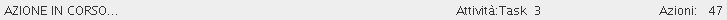

in the status bar you can see the actual application status.

Illustration
1: the status bar
The label on the left side shows the timer status. This means that when you start an action the label changes from IDLE to RUNNING.
The right-most label shows the selected task and its actions number.
When the application starts a long operation (for example, importing a huge workspace from a LAN) there is a progress bar on the center of the status bar.